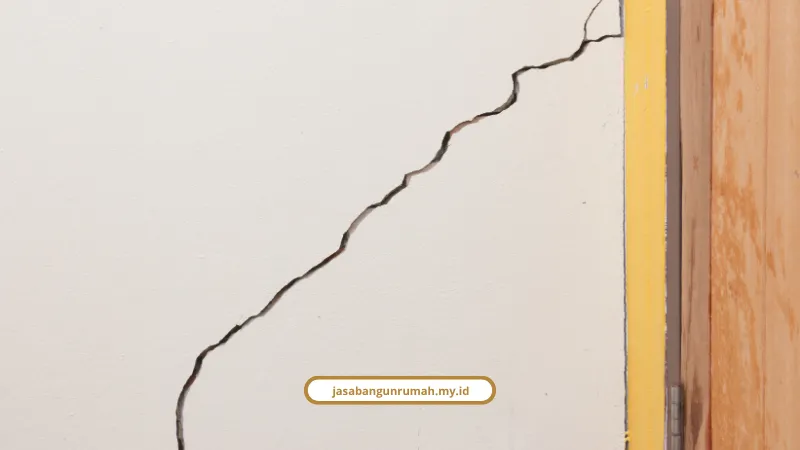

Daftar Isi
Kami menyediakan solusi pondasi tanah gerak Surabaya lewat metode bore pile, strauss pile, dan stabilisasi tanah yang disesuaikan dengan karakter lempung ekspansif di Surabaya Timur dan Barat. Semua berbasis data teknis, bukan tebakan.
Kenapa Tanah di Surabaya Timur Rawan Bergerak?
Tanah di Surabaya Timur rawan bergerak karena didominasi tanah lunak lempung hingga lanau berpasir yang sangat sensitif terhadap perubahan kadar air. Kondisi ini membutuhkan evaluasi ketat terhadap daya dukung tanahnya sebelum membangun.
Eko Teguh Paripurno, pakar manajemen kebencanaan geologi dari UPN Veteran Yogyakarta, menjelaskan mekanismenya begini: "Kalau dia basah, dia akan mengembang. Kalau kering, dia akan menyusut. Ini yang menjadikan tanah itu bergerak."
Untuk kawasan lempung ekspansif seperti di area Surabaya Barat sekitar Pakuwon, kondisinya bahkan lebih ekstrem:
- Indeks plastisitas (IP) tinggi, di atas 17%
- Nilai CBR asli rendah, hanya 4,9%
- Sifat kembang susut yang tinggi
Saat musim hujan, tanah menyerap air dan mengembang (swelling). Sebaliknya saat kemarau, tanah menyusut (shrinkage) hingga membentuk retakan tanah selebar 15 cm dengan kedalaman mencapai 1,5 meter.
Kalau Anda sedang merencanakan pembangunan di lahan dengan karakter tanah seperti ini, ada baiknya cek dulu rincian tarif dan alur kerja kami di jasa konstruksi rumah Surabaya sebelum masuk tahap pondasi.
Apa Tanda-Tanda Rumah Terdampak Tanah Bergerak?
Tanda paling umum adalah retak diagonal dari sudut pintu atau jendela, serta lantai yang bergeser atau terangkat. Kalau Anda menemukan gejala ini di rumah, sebaiknya jangan dianggap remeh.
Ciri retak struktural yang perlu diwaspadai:
- Retak diagonal dari sudut pintu atau jendela
- Retak pola tangga pada mortar pasangan bata
- Dinding retak yang menembus kedua sisi
- Posisi lantai bergeser atau terangkat
Penyebab pendukung lain yang sering luput dari perhatian adalah drainase air yang buruk di sekitar rumah, tanah urugan yang kurang padat, sampai kebocoran pipa air di bawah pondasi.
Jenis Pondasi Apa yang Cocok untuk Tanah Gerak?
Ada tiga jenis pondasi utama yang cocok untuk kondisi tanah gerak, yaitu bore pile, strauss pile, dan pelat rakit, tergantung kedalaman tanah keras dan kondisi lahan. Pemilihannya tidak bisa asal, harus lewat pengujian tanah dulu.
Pondasi Bore Pile (mesin atau mini crane) sangat direkomendasikan untuk area permukiman padat di Surabaya karena:
- Pengerjaannya minim getaran dan tidak merusak bangunan tetangga
- Mampu menembus lapisan tanah aktif hingga mencapai kedalaman tanah keras
Pondasi Strauss Pile (bor manual) jadi solusi ekonomis untuk rumah tinggal 1-2 lantai atau ruko dengan akses lahan terbatas seperti gang sempit, terutama jika kedalaman tanah keras relatif dangkal, maksimal 6 meter.
Pondasi Cakar Ayam dan Pelat Rakit mendistribusikan beban bangunan secara merata di atas tanah ekspansif untuk meminimalkan efek pergerakan tanah yang tidak seragam.
Kalau tanahnya berupa lumpur atau gambut, bagian bawah pondasi wajib dipasangi cerucuk kayu (dolken atau gelam) sebanyak 9 sampai 16 batang per titik, di kedalaman 2 sampai 5 meter.
Studi komparatif dari Ir. Isnaniati, M.T. dan Defi L., peneliti Teknik Sipil Universitas Muhammadiyah Surabaya, di kasus Gedung At-Tauhid UM Surabaya menemukan bahwa perhitungan daya dukung tiang dengan Teori L'Decourt memberikan estimasi yang lebih optimal dibanding Teori Meyerhof, berdasarkan uji N-SPT pada tanah lanau kepasiran.
Apakah Ada Metode Stabilisasi Selain Pondasi Tiang?
Ada, salah satunya lewat stabilisasi kimiawi menggunakan campuran gypsum yang terbukti menurunkan plastisitas tanah dan meningkatkan daya dukungnya. Metode ini cocok untuk tanah dasar yang sangat ekspansif.
Tim peneliti Teknik Sipil ITATS, M. Crevill Ferdyawan bersama Dr. Ir. Gati Sri Utami, M.T. dan rekan-rekan, mengemukakan solusi stabilisasi tanah dasar ekspansif di Surabaya dengan campuran gypsum 19% dan pemeraman 15 hari. Hasilnya:
- Indeks Plastisitas (IP) turun dari 17,8% menjadi 12,4%
- Nilai CBR tanah naik dari 4,9% menjadi 7,4%
Selain stabilisasi, ada juga metode underpinning, yaitu perkuatan dari bawah dengan menyuntikkan material khusus atau membuat tumpuan baru di bawah pondasi eksisting. Cara ini biasanya dipakai untuk rumah yang sudah terlanjur mengalami penurunan struktur.

Berapa Estimasi Biaya Pekerjaan Pondasi di Surabaya?
Biaya jasa bore pile di Surabaya berkisar Rp 120.000 sampai Rp 350.000 per meter, tergantung diameter yang dipilih. Sementara strauss pile lebih murah karena pengerjaannya manual.
Rincian biaya jasa bore pile (tenaga saja):
- Diameter 30 cm: Rp 120.000 - Rp 160.000 per m¹
- Diameter 40 cm: Rp 160.000 - Rp 200.000 per m¹
- Diameter 50 cm: Rp 200.000 - Rp 250.000 per m¹
- Diameter 60 cm: Rp 275.000 - Rp 350.000 per m¹
Rincian biaya jasa strauss pile (bor manual):
- Diameter 20-25 cm: Rp 70.000 - Rp 75.000 per m¹
- Diameter 30 cm: Rp 80.000 - Rp 85.000 per m¹
- Diameter 40 cm: Rp 95.000 - Rp 100.000 per m¹
Di luar itu, ada biaya mobilisasi dan demobilisasi alat sekitar Rp 1.000.000 sampai Rp 3.000.000 per set alat untuk area Surabaya.
Perhitungan pondasi yang tepat ini juga jadi bagian dari layanan jasa arsitek kami, karena desain struktur dan analisa tanah harus jalan beriringan sejak tahap awal perencanaan.
Jangan Anggap Remeh Kondisi Tanah Sebelum Membangun
Tanah gerak di Surabaya Timur dan Barat bukan hal yang bisa diselesaikan dengan pondasi asal-asalan. Butuh pengujian tanah, pemilihan jenis pondasi yang tepat, dan kalau perlu stabilisasi tambahan sebelum konstruksi jalan.
Kalau Anda punya lahan dengan riwayat tanah bermasalah atau rumah yang sudah menunjukkan gejala retak struktural, konsultasikan langsung kebutuhan Anda lewat layanan jasa kontraktor bangunan kami.